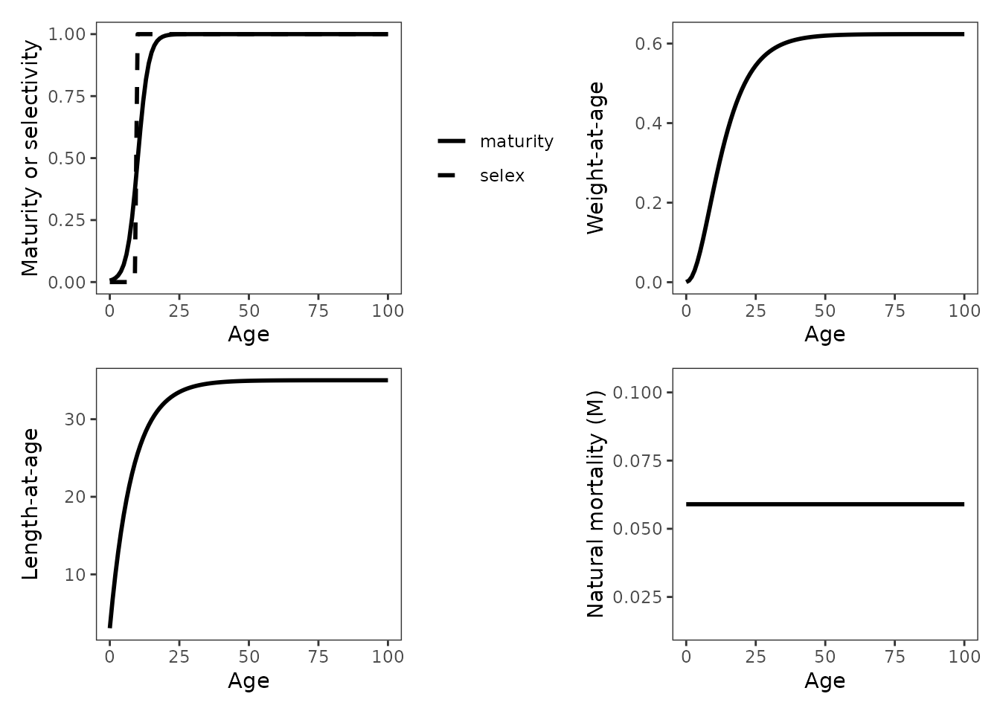
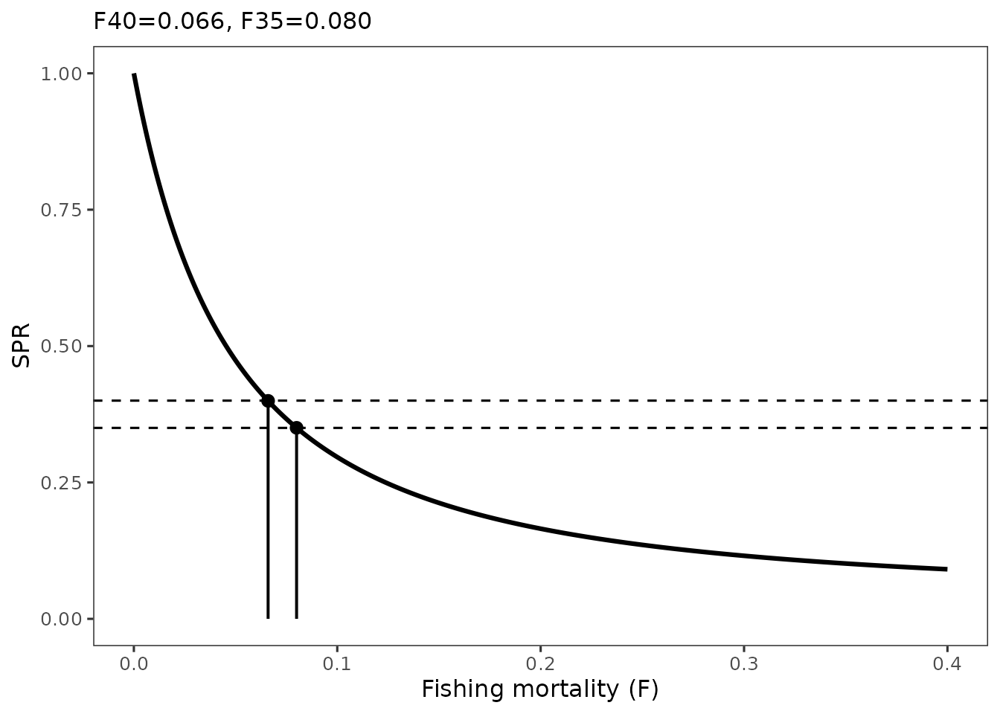
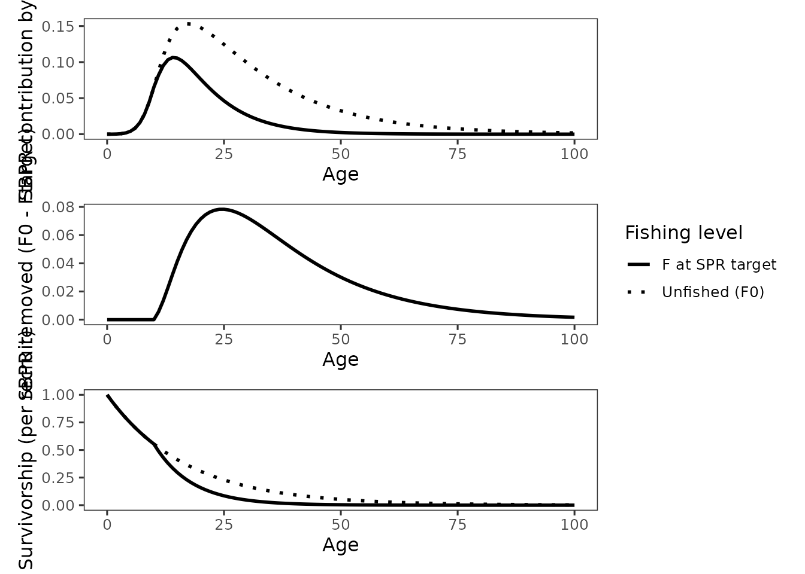
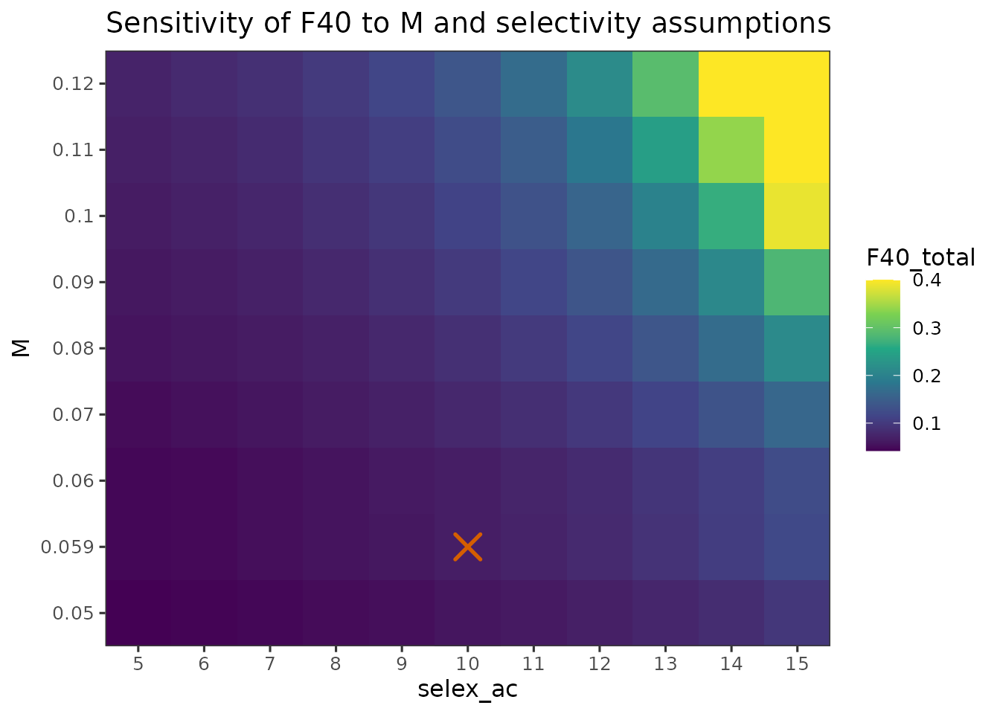
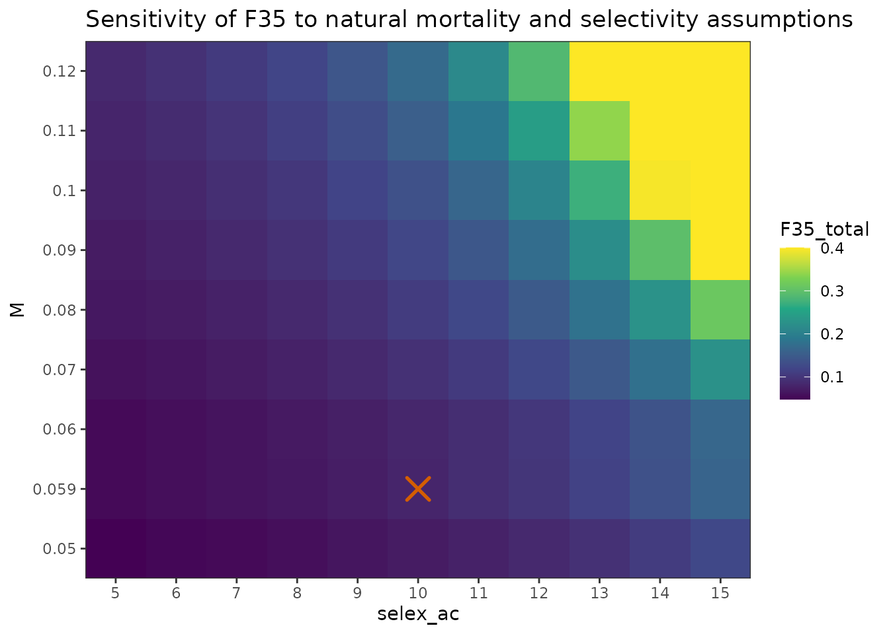
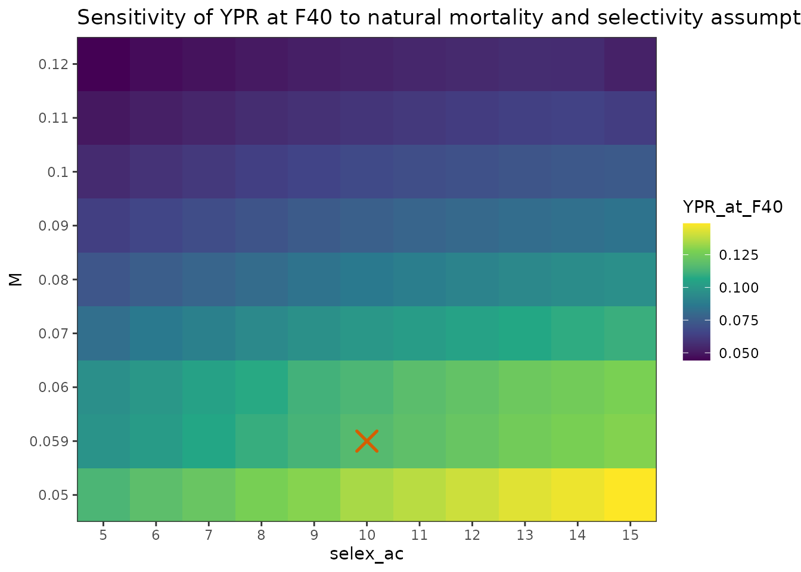

Single species workflow: Gulf of Alaska sharpchin rockfish
sharpchin_single_species.RmdBackground and objectives
Sharpchin rockfish (Sebastes zacentrus) in the Gulf of Alaska is caught as a non-target species and has limited age and fishery data. Sharpchin is currently the only Alaska groundfish species managed under a Tier 4 assessment framework, and provides a useful example of how spawning potential ratio (SPR) and yield-per-recruit (YPR) methods can be applied when age-structured models are not feasible.
This vignette demonstrates the full Tier 4 per-recruit workflow implemented in tier4tools using Gulf of Alaska sharpchin rockfish as a single-species example. The objectives are to:
- Construct per-recruit inputs using published and assessment-derived
life history information using
spr_inputs(). - Validate inputs visually using
plot_spr_inputs(). - Compute SPR-based fishing mortality reference points using
run_spr(). - Generate diagnostic decomposition plots for review and SAFE
reporting using
plot_spr_decomp(). - Evaluate sensitivity of reference points to uncertainty in natural
mortality
()
fishery selectivity using
spr_sensitivity().
Life history and fishery inputs
Biological inputs for sharpchin rockfish were drawn from published studies and assessment documentation, including von Bertalanffy growth parameters, weight-length relationships derived from trawl survey data, maturity-at-age estimates, and estimated using the Hoenig (1983) method. Fishery selectivity is poorly informed due to limited sampling and is therefore assumed to follow a knife-edge pattern.
For the base case, , maturity is parameterized using a logistic maturity curve with midpoint years and slope parameter . Fishery selectivity is assumed to be knife-edge with full selection beginning at age years. A maximum age of 58 years is assumed, and here we assume no plus group.
Construct per-recruit inputs with spr_input()
library(tier4tools)
ages <- 0:100
inp <- spr_input(
ages = ages,
species = list(
Sharpchin = list(
len_at_age = list(type = "vb", Linf = 35.02, k = 0.122, t0 = -0.75),
wt_at_age = list(type = "wl", alpha = 1.19e-5, beta = 3.056),
maturity = list(type = "logistic", a50 = 10.06, delta = -1.96),
selectivity = list(type = "knife_edge", a_c = 10),
M = 0.059
)
),
use_plus_group = FALSE
)
str(inp, max.level = 3)
#> List of 5
#> $ ages : num [1:101] 0 1 2 3 4 5 6 7 8 9 ...
#> $ R0 : num 1
#> $ use_plus_group: logi FALSE
#> $ rec_prop : Named num 1
#> ..- attr(*, "names")= chr "Sharpchin"
#> $ species :List of 1
#> ..$ Sharpchin:List of 11
#> .. ..$ name : chr "Sharpchin"
#> .. ..$ R0_base : num 1
#> .. ..$ R0 : num 1
#> .. ..$ M_at_age : num [1:101] 0.059 0.059 0.059 0.059 0.059 0.059 0.059 0.059 0.059 0.059 ...
#> .. ..$ len_at_age : num [1:101] 3.06 6.73 9.98 12.86 15.4 ...
#> .. ..$ wt_at_age : num [1:101] 0.000364 0.004041 0.013461 0.02918 0.050679 ...
#> .. ..$ maturity_at_age: num [1:101] 0.00587 0.00973 0.01611 0.02654 0.04345 ...
#> .. ..$ selex_at_age : num [1:101] 0 0 0 0 0 0 0 0 0 0 ...
#> .. ..$ maturity_delta : num -1.96
#> .. ..$ maturity_spec :List of 3
#> .. ..$ spec :List of 5Validate assumptions visually with
plot_spr_inputs()
Before running SPR calculations, it is good practice to check that
the implied schedules look reasonable. plot_spr_inputs() is
designed for two use cases:
- user quality assurance, to verify maturity, selectivity, weight-at-age, and mortality schedules were parameterized and input correctly
- reporting, to document base case versus sensitivity assumptions, or differences among species
inp_plots <- plot_spr_inputs(inp, panels = c("mat_selex", "wt", "len", "M"))
## inidividual plots
# inp_plots$mat_selex
# inp_plots$wt
# inp_plots$len
# inp_plots$M
# select a group of plots using optional helper function that relies on
# the "patchwork" R library
grid_spr_inputs(inp_plots, order = c("mat_selex", "wt","len","M"), ncol = 2, guides = "keep")
If you are comparing scenarios in a sensitivity analysis, you can
pass multiple spr_input() objects via compare
and facet by scenario:
# Example (**code only shown, not run**): construct additional spr_input
# objects, either from scratch or by modifying existing input objects as shown
# below using public-facing functions like selectivity_at_age(),
# maturity_at_age(), wt_at_age(), or len_at_age()
# sensitivity 1 (knife-edge selectivity with max selectivity at age 5)
inp_sens1 <- inp
inp_sens1$species$Sharpchin$selex_at_age <- selectivity_at_age(ages = inp$ages, selectivity = list(type = "knife_edge", a_c = 5))
# sensitivity 2 (knife-edge selectivity with max selectivity at age 5)
inp_sens2 <- inp
inp_sens2$species$Sharpchin$selex_at_age <- selectivity_at_age(ages = inp$ages, selectivity = list(type = "knife_edge", a_c = 15))
# show base + sensitivities
inp_plots <- plot_spr_inputs(x = inp, compare = list(Sens1 = inp_sens1, Sens2 = inp_sens2), )
inp_plots$mat_selexRun per-recruit SPR and YPR with run_spr()
spr_out <- run_spr(
inp,
diagnostics = TRUE
)
spr_out$F_spr_total
#> F40_total F35_total
#> 0.066 0.080Plot SPR curves
plot_spr_curves(spr_out)
The curve shows across the fishing mortality grid. Horizontal lines show the target SPR levels (for example 0.40 and 0.35). The corresponding fishing mortality reference points (for example and ) are the values of where the curve intersects the targets.
Diagnostic decomposition plots
Tier 4 SPR calculations can be sensitive to maturity schedules, selectivity assumptions, weight-at-age, and plus group treatment. To support consistent review and reporting, tier4tools provides SBPR age decomposition diagnostics as a set of standardized panels.
plots <- plot_spr_decomp(spr_out,
which_panels = c("contrib", "removed", "survivorship"),
drop_plus_from_plot = TRUE)
## individual plots
# plots$contrib
# plots$removed
# plots$survivorship
# select a group of plots using optional helper function that relies on
# the "patchwork" R library
grid_spr_decomp(plots)
Interpretation:
-
plots$contribshows SBPR contribution by age for unfished conditions (F = 0) and at the diagnostic reference fishing mortality (Ftarget). -
plots$removedshows the age-specific SBPR removed by fishing, computed as contribution at F = 0 minus contribution atFtarget. -
plots$survivorshipshows per-recruit survivorship under F = 0 andFtarget.
The plus group share is reported separately as the fraction of total
SBPR contributed by the terminal age at F = 0 and Ftarget.
Here we assume no plus group calculations in the model; therefore, the
plus-share is almost non-existent.
spr_out$diagnostics$plus_share
#> NULLSensitivity analysis: natural mortality and selectivity
Uncertainty in and fishery selectivity is a key concern for sharpchin rockfish. Here we run a structured sensitivity analysis varying:
- from 0.05 to 0.12
- knife-edge selectivity age from 5 to 15 years
All other inputs are held fixed.
sens <- spr_sensitivity(
inp,
M = seq(0.05, 0.12, by = 0.01),
selex_ac = seq(5, 15, by = 1),
spr_targets = c(0.40, 0.35),
multispecies_constraint = "none"
)
head(sens)
#> scenario_id M maturity_a50 selex_ac prop F40_total F35_total
#> 1 1 NA NA NA NA 0.066 0.080
#> 2 2 0.05 NA NA NA 0.058 0.070
#> 3 3 0.06 NA NA NA 0.066 0.082
#> 4 4 0.07 NA NA NA 0.078 0.094
#> 5 5 0.08 NA NA NA 0.088 0.108
#> 6 6 0.09 NA NA NA 0.100 0.122
#> F40_total_constrained F35_total_constrained YPR_at_F40
#> 1 NA NA 0.11651216
#> 2 NA NA 0.13460304
#> 3 NA NA 0.11420131
#> 4 NA NA 0.09968137
#> 5 NA NA 0.08669596
#> 6 NA NA 0.07630796
#> plus_share_Sharpchin_F0 plus_share_Sharpchin_Ftarget F40_Sharpchin
#> 1 NA NA 0.066
#> 2 NA NA 0.058
#> 3 NA NA 0.066
#> 4 NA NA 0.078
#> 5 NA NA 0.088
#> 6 NA NA 0.100
#> F35_Sharpchin YPR40_Sharpchin share40_Sharpchin YPR40_total
#> 1 0.080 0.11651216 1 0.11651216
#> 2 0.070 0.13460304 1 0.13460304
#> 3 0.082 0.11420131 1 0.11420131
#> 4 0.094 0.09968137 1 0.09968137
#> 5 0.108 0.08669596 1 0.08669596
#> 6 0.122 0.07630796 1 0.07630796
#> YPR40_Sharpchin_constrained share40_Sharpchin_constrained
#> 1 NA NA
#> 2 NA NA
#> 3 NA NA
#> 4 NA NA
#> 5 NA NA
#> 6 NA NA
#> YPR40_total_constrained YPR35_Sharpchin share35_Sharpchin YPR35_total
#> 1 NA 0.12353530 1 0.12353530
#> 2 NA 0.14233674 1 0.14233674
#> 3 NA 0.12202936 1 0.12202936
#> 4 NA 0.10551203 1 0.10551203
#> 5 NA 0.09230489 1 0.09230489
#> 6 NA 0.08108499 1 0.08108499
#> YPR35_Sharpchin_constrained share35_Sharpchin_constrained
#> 1 NA NA
#> 2 NA NA
#> 3 NA NA
#> 4 NA NA
#> 5 NA NA
#> 6 NA NA
#> YPR35_total_constrained scenario_label M_value maturity_a50_value
#> 1 NA M=base, a50=base, ac=base 0.059 10.06
#> 2 NA M=0.050, a50=base, ac=base 0.050 10.06
#> 3 NA M=0.060, a50=base, ac=base 0.060 10.06
#> 4 NA M=0.070, a50=base, ac=base 0.070 10.06
#> 5 NA M=0.080, a50=base, ac=base 0.080 10.06
#> 6 NA M=0.090, a50=base, ac=base 0.090 10.06
#> selex_ac_value prop_value
#> 1 10 NA
#> 2 10 NA
#> 3 10 NA
#> 4 10 NA
#> 5 10 NA
#> 6 10 NAVisualize sensitivity results
Heatmaps are a compact way to summarize how reference points vary across a structured grid of assumptions.
plot_sensitivity_heatmap(
sens,
x = "selex_ac",
y = "M",
fill = "F40_total",
title = "Sensitivity of F40 to M and selectivity assumptions",
fill_scale = "viridis"
)
You can similarly visualize or yield at .
plot_sensitivity_heatmap(
sens,
x = "selex_ac",
y = "M",
fill = "F35_total",
title = "Sensitivity of F35 to natural mortality and selectivity assumptions"
)
plot_sensitivity_heatmap(
sens,
x = "selex_ac",
y = "M",
fill = "YPR_at_F40",
title = "Sensitivity of YPR at F40 to natural mortality and selectivity assumptions"
)
Interpretation:
- Fishery selectivity and are both dominant sources of uncertainty in SPR-based reference points, with later age at full selection and higher resulting in higher and .
- At low values, including the base-case M=0.059, and early selectivity, was uniformly low and relatively insensitive to either parameter. In contrast, at higher and later selectivity, small changes in either assumption produced large shifts in .
- YPR evaluated at increases with later selectivity and decreases with higher , reflecting differences in the SPR-constrained rather than YPR at a fixed .
Summary
This vignette demonstrates a complete Tier 4 per-recruit workflow for a single species using tier4tools. The workflow separates biological and fishery assumptions from downstream calculations, provides standardized diagnostics and plotting helpers, and supports structured sensitivity evaluation of influential uncertainties.
In the multispecies vignette, the same workflow is extended to stock complexes and additional outputs are introduced for constrained reference points.